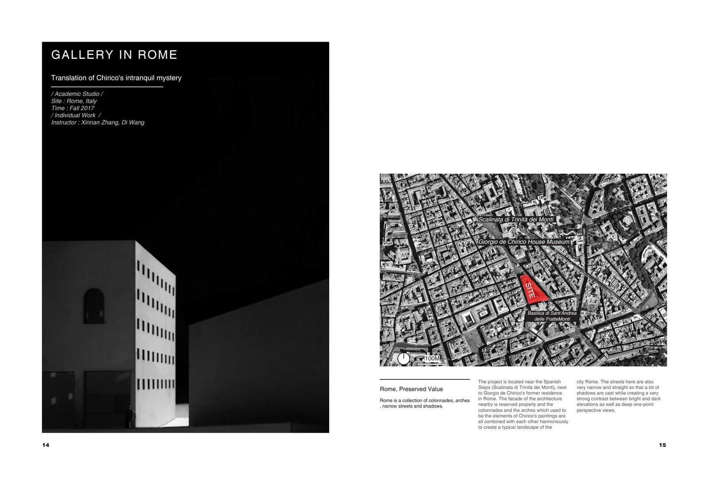
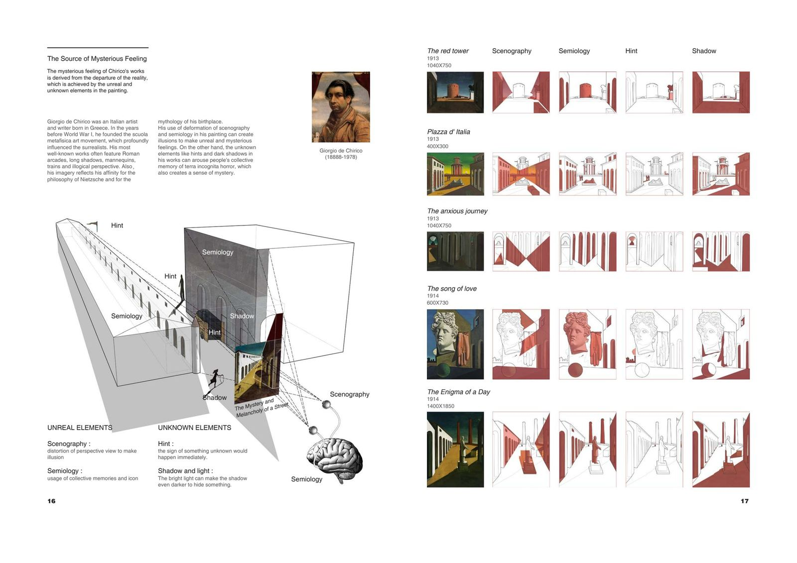
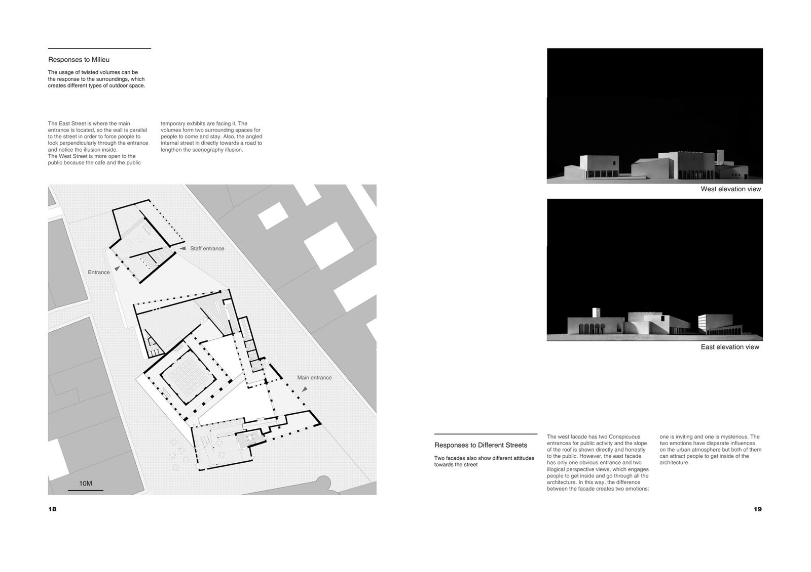
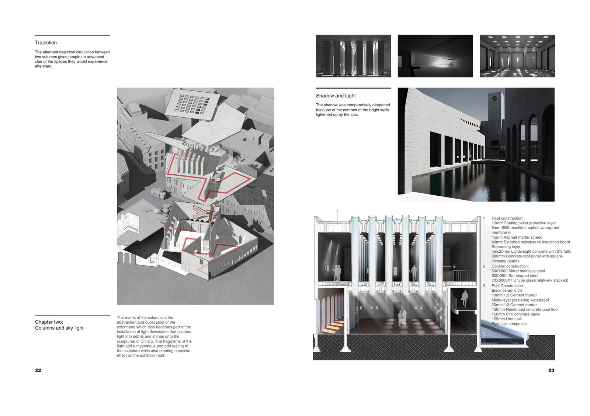
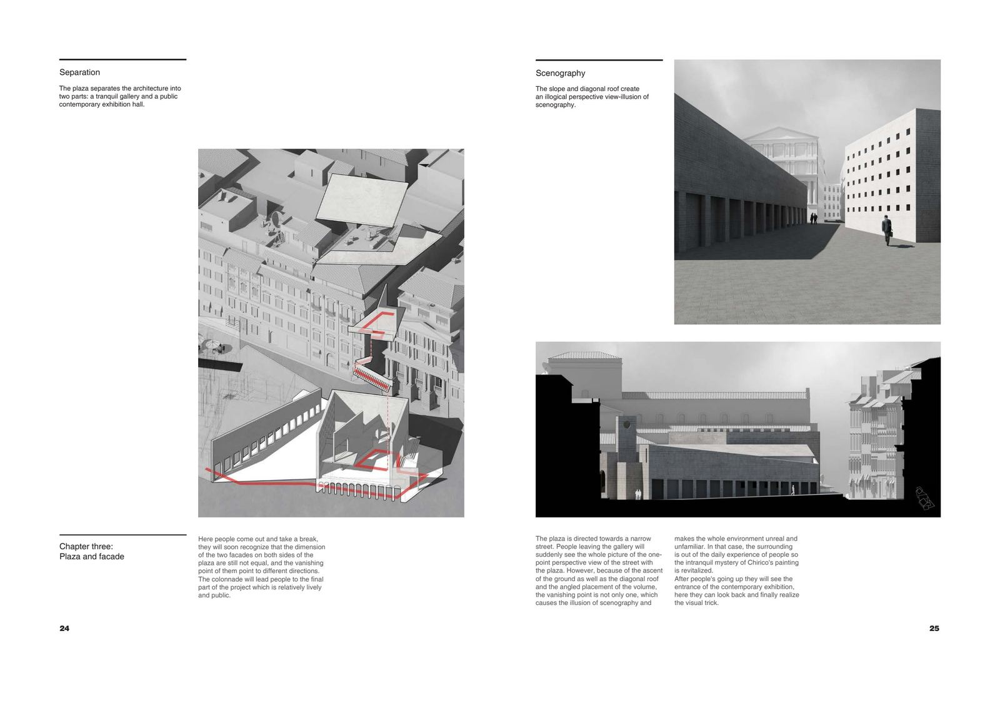
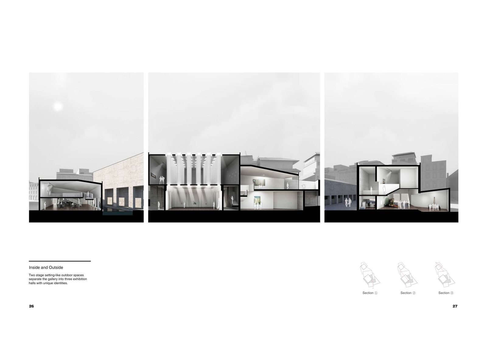

Located near the Spanish Steps and next to Giorgio de Chirico's former residence in Rome, this gallery translates the metaphysical mystery of Chirico's paintings into architectural space. The surrounding facades, colonnades, and arches — elements from Chirico's own canvases — create a typical Roman landscape of narrow streets and deep shadows.
Chirico founded the scuola metafisica art movement before World War I, profoundly influencing the surrealists. His works feature Roman arcades, long shadows, mannequins, trains, and illogical perspective — imagery reflecting his affinity for Nietzsche's philosophy and Greek mythology.


The west facade has two conspicuous entrances for public activity with the roof slope shown honestly. The east facade, however, has only one entrance and two illogical perspective views — engaging visitors to explore the interior. This duality creates two emotions: one inviting, one mysterious, both drawing people inside.
The gallery unfolds as a three-chapter spatial narrative: Hall and Tower, Columns and Skylight, and Plaza and Facade — each translating Chirico's artistic themes into architectural experience.


The matrix of columns abstracts and duplicates the colonnade, becoming part of a light installation that scatters light into fragments and shines onto Chirico's sculptures. Two stage-setting-like outdoor spaces separate the gallery into three exhibition halls with unique identities, creating an alternating rhythm between inside and outside.


